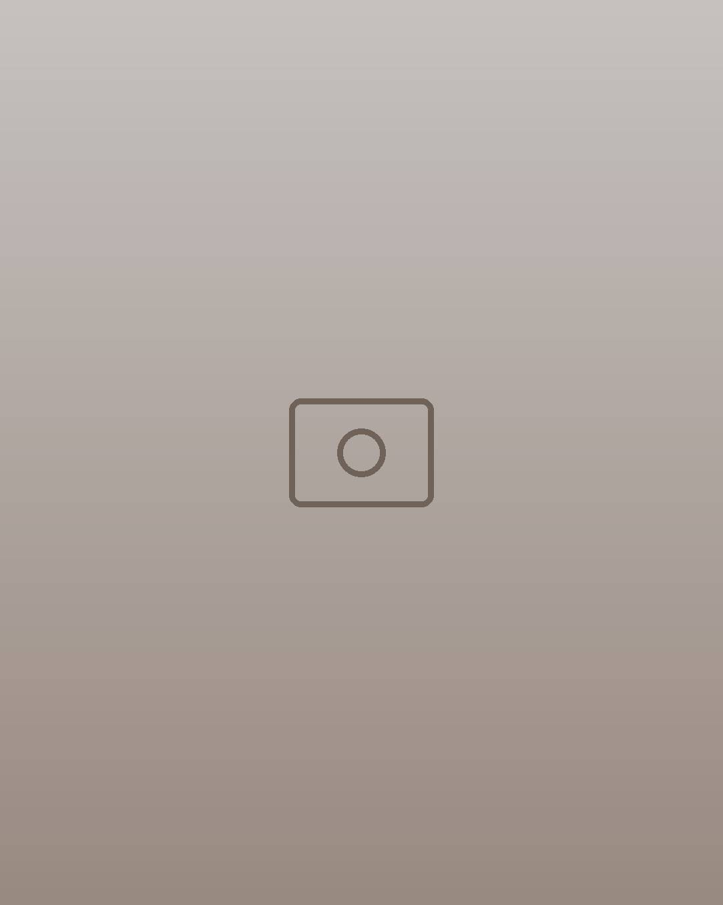
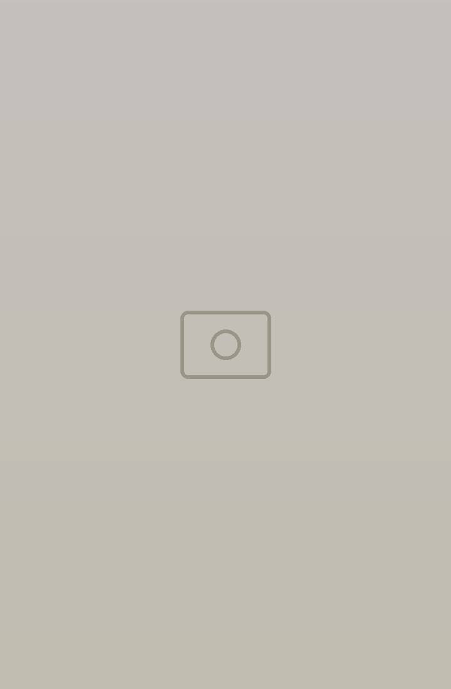
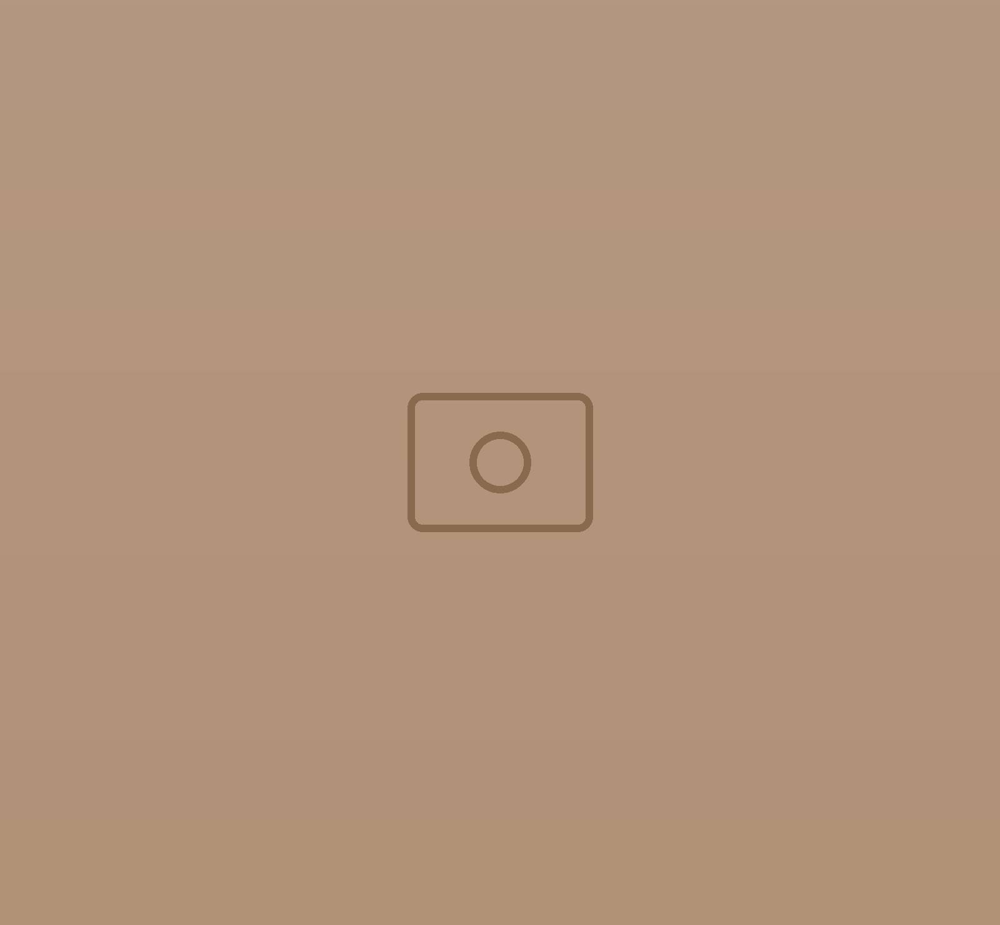
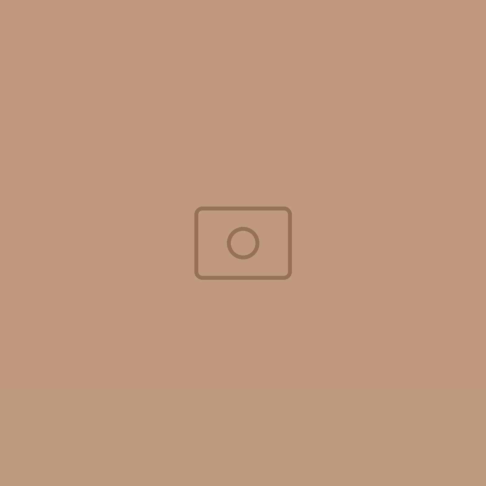

Restaurant · La Goulette
Le goût de KerkennahL’Aquamarine
La cuisine de Kerkennah, fidèle à la tradition ou réinventée, avec des produits arrivés tout droit de l’archipel.
De l’archipel à votre assiette
Les îles Kerkennah, à La Goulette
Une cuisine généreuse et à partager, construite sur les produits de l’archipel de Kerkennah, dans une salle claire et fraîche, toute l’année.
- Le poulpe des îlesLe poulpe tendre de Kerkennah, en carpaccio, en salade ou à la galicienne.
- Le poisson fraisLoup, seiches et fruits de mer de l’archipel, sautés à la minute.
- L’huile d’olive presséeUne huile de première pression pour accompagner le poisson : la qualité, ça se goûte.


La salle
Claire, fraîche, et une table qui vous attend
Niches éclairées, suspensions en rotin et portes en arc : un dîner entre amis y prend une saveur à part.


Infos & réservation
00 000 000- Où
- La Goulette, Tunis
- Horaires
- Chaque jour, de 12h à 23h
- Saison
- Hiver comme été